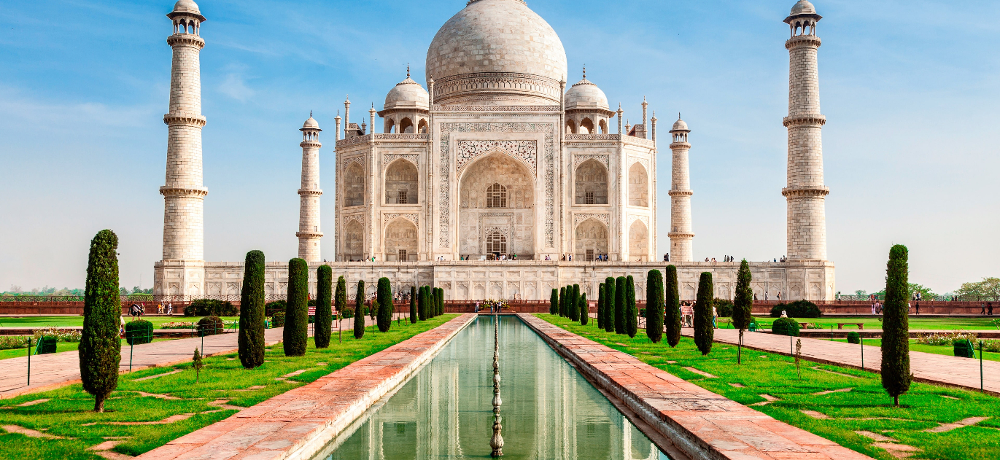

Historical Places in India
5000 years of civilization and more has given India some fantastic historical places, monuments, legends and experiences. Paying a tribute to the glorious history and heritage, these monuments are absolutely fascinating. Right from ancient to medieval times, several kings and emperors, dynasties and kingdoms have built monuments for various reasons. However, there is no denying the fact that historical places in India draw visitors in large numbers. From the Taj Mahal to the ruins of Hampi, every fort, palace or temple is an example of outstanding aesthetics and elegance.
Top 5 Historical Places in India:
- Red fort
- Taj Mahal
- Hawa Mahal
- Victoria Memorial
- Qutub Minar
1.Red Fort,Delhi
.jpg)
The Red Fort is a historical fortification in the old Delhi area. Shah Jahan constructed it in the year 1639 as a result of a capital shift from Agra to Delhi. Used as the main residence of the emperors of the Mughal dynasty, this imposing piece of architecture derives its name from its impregnable red sandstone walls. In addition to accommodating the emperors and their households, it was the ceremonial and political centre of the Mughal state and the setting for events critically impacting the region. Today, this monument is home to several museums that have an assortment of precious artefacts on display. Every year, the Indian Prime Minister unfurls the national flag here on the Independence Day.
2.Taj Mahal

One of the seven wonders of the world, Taj Mahal is located on the banks of River Yamuna in Agra. It was built by the Mughal Emperor Shah Jahan as a memorial for his third wife, Mumtaz Mahal. It also houses the tomb of Shah Jahan himself. Constructed entirely out of white marble in the 17th century, Taj Mahal is one of the most beautiful monuments in the world. Every year visitors numbering more than the entire population of Agra pass through the magnificent gates to catch a glimpse of this breathtaking monument!The Taj Mahal has intricate carvings and is made entirely of white marble, on the southern banks of the Yamuna River. It is also one of the Seven Wonders of the World.
3.Hawa Mahal
.jpg)
Hawa Mahal in Jaipur is one of the best historical places in India, in addition to being a prominent landmark of Rajasthan. Dating back to the 18th century, Hawa Mahal is a 5-storey structure that overlooks the bustling streets of Jaipur. It has also been made in a blend of the Rajput, Mughal and Islamic styles of architecture.
Built by Maharaja Sawai Pratap Singh, the Hawa Mahal has been constructed in a way such that the small windows here allow winds to enter the palace and keep it cool during the blazing hot summers.
4.Victoria Memorial
Another relic of the British Raj in India, the Victoria Memorial is located in the heart of Kolkata, in West Bengal. This white marbled opulent structure was built in memory of Queen Victoria to celebrate her 25 years of rule over India and is almost a replica of the Victoria Memorial in London. Victoria Memorial is an iconic structure that is synonymous with the city of joy!
The memorial is surrounded by a lush green and well-maintained garden, which spreads over 64 acres and has numerous statues and sculptures in it. A sixteen-foot tall bronze statue of victory, mounted on ball bearings at the top of the memorial, serves to heighten the overall appeal and grandeur of the entire complex. Victoria Memorial is breathtaking and marvellous, especially at night, when it is illuminated.
5.Qutub Minar
Delhi’s Qutub Minar ranks amongst the top 10 historical places in India. A UNESCO World Heritage Site, the Qutub Minar, also known as the Victory Tower, is the tallest brick minaret in the whole world, standing tall at a height of 72.5 metres. Built of marble and red sandstone, you can also see many beautiful carvings and intricate designs of the Qutub Minar.
The Qutub Minar was built in the late 1100s, to celebrate Muslim Dominance in Delhi, after its last Hindu ruler was defeated. The construction was commenced by Qutab-ud-din Aibak, followed by his successors Iltutmish and Firoz Shah Tughlak.
Thank You for reading up till end